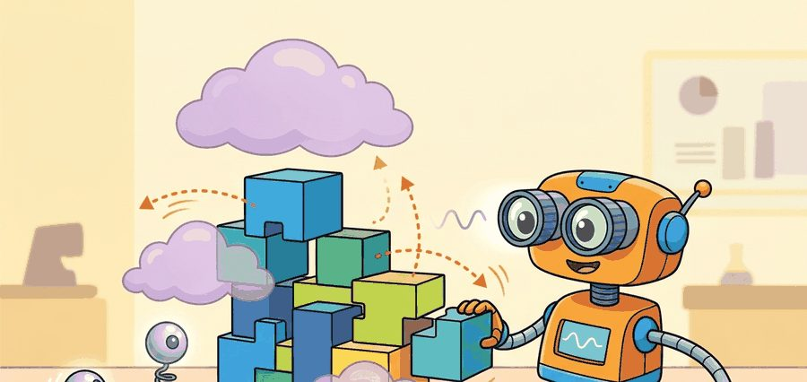
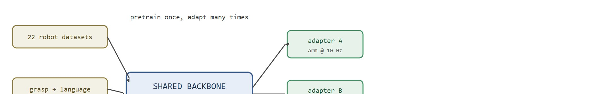
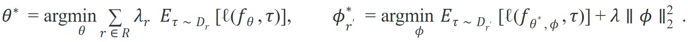

"A robot prior earns the word foundation only when it reduces the cost of the next real adaptation."
A Practical Robot Theorist

A warehouse arm that spent a year mastering bin-picking now sits idle while an adjacent mobile base relearns how to grasp the same objects from scratch. That redundancy was unavoidable until recently. Today, foundation models trained across dozens of robot platforms typically cut new-embodiment adaptation costs by roughly 5-8x in reported transfer studies, because contact physics, object geometry, and short-horizon motor structure are largely the same regardless of which steel hand is doing the reaching. This section unpacks why that shared structure exists, what a robot foundation model actually encodes, and how you will distinguish genuine transfer from a model that merely memorizes a large dataset.
This section assumes familiarity with imitation learning and the failure modes of narrow policies covered in section 21.2, and with data-scaling intuitions from section 24.4. The ideas here are extended directly in section 35.2 (cross-embodiment training mechanics) and section 35.3 (action tokenization and normalization), and they recur throughout Part 7 alongside vision-language-action architectures introduced in module 34.
The rest of this section treats two terms as load-bearing before defining them formally: "pooling" data across robots to train one shared policy, and "adaptation," the short re-grounding step that follows. Both are made precise later in Formal View: Pretrain Once, Adapt Many Times; here they are introduced through a concrete failure case first.
Pool trajectories from 22 different robots, train one policy on all of it, then drop that policy onto a robot arm it has already seen data from, and watch it fail almost every grasp: a Franka Panda policy (a widely used 7-degree-of-freedom robotic arm from Franka Robotics) trained on the Open X-Embodiment mixture still achieves near-zero success on a WidowX arm without adaptation. The two platforms differ in joint-space dimensionality, wrist-camera extrinsics, and maximum end-effector velocity. Pooling raw data does not eliminate per-embodiment retraining. Every embodiment needs the same subskills: localizing objects under varying illumination, grounding task language to contact-rich motion sequences, and recovering from sub-centimeter perturbations during a grasp. Yet the sensor and actuator interfaces differ enough to break a narrow policy on the first rollout, before it completes a single grasp. A foundation model absorbs those embodiment-invariant subskills once inside a shared transformer backbone, then exposes them through a thin adapter that remaps action scales and camera timing for each new platform, as Figure 35.1A illustrates and as Figure 35.1B diagrams in architectural terms below. Counterintuitively, naively pooling data from more robot types without this shared structure can make a single-embodiment policy perform worse than one trained on that embodiment alone, because conflicting action conventions overwhelm the signal rather than enriching it.

The adapter matters physically. A backbone trained on one robot's action range outputs deltas that overshoot joint limits or stall short of the target on any other robot, so a competent grasp plan becomes a hardware fault or a missed contact. The adapter remaps that learned behavior into commands the new robot can safely execute, preserving the intelligence instead of discarding it.
Before reading on, guess: how many adaptation demonstrations does it take to re-ground a competent foundation model onto a new robot arm?
A short answer, before the mechanics: typically far fewer than training from scratch, often in the hundreds rather than the thousands, precisely because the backbone already carries the embodiment-invariant subskills described above; the next section works out exactly which module inside the model is responsible for that saving.
Mechanically, the adapter is a small learned module that sits between the backbone's action head and the robot's low-level controller. It applies three corrections. A learned linear rescaling matches action magnitudes to the new robot's velocity and torque ranges. A timing bridge interpolates or repeats backbone outputs to hit the target control frequency. A camera-extrinsics correction realigns spatial predictions to the new sensor pose. A small set of adaptation demonstrations trains these three components while the backbone weights stay frozen.
The physical failure mode is precise. A narrow behavioral cloning (BC) policy trained on a Franka at 10 Hz outputs action deltas sized for 10 Hz control. Run that policy on a UR5 at 25 Hz without frequency bridging, and the oscillating joint commands trigger the arm's safety torque limits within the first two seconds of a pick-and-place trial. A foundation model with an explicit temporal upsampling adapter converts that brittle one-off policy into a bounded adaptation problem. The backbone retains grasp staging and language grounding. The adapter learns the frequency rescaling from as few as 50 new demonstrations instead of the 1,800 the narrow policy needed from scratch.
Foundation status is earned by transfer. If a model needs nearly full retraining for every new embodiment, it is a large robot policy, not a robot foundation model.
Readers often assume that a robot foundation model works out of the box on any new robot, the same way a language model can answer questions in a new domain without retraining. That analogy breaks in embodied AI because physical action is not modality-invariant: joint ranges, control frequencies, camera placements, and gripper geometries differ enough across platforms to make a raw backbone policy useless or unsafe on hardware it was not calibrated for. The correct mental model is that a foundation model eliminates the need to relearn perception and manipulation semantics, but it does not eliminate the adapter that re-grounds those semantics into the new robot's physical interface. Transfer is always a two-stage process: shared prior plus targeted adaptation, and the adaptation step is mandatory, not optional.
A backbone that generalizes across dozens of robots but cannot be grounded to a new one is not a foundation model; it is a very expensive starting point.
To decide when that starting point becomes a genuine foundation rather than an expensive one, it helps to write the two-stage structure down precisely, so the shared prior and the per-robot adapter can be measured separately.
A useful abstraction separates the shared backbone from the robot-specific adaptation layer:

The first stage learns a shared prior across training robots $\mathcal{R}$. The second stage adapts that prior to a new robot $r'$. The adaptation term $\phi$ might be a LoRA (Low-Rank Adaptation) block, an action adapter, an embodiment token, or a small amount of post-training data. The operational question is whether the sample count and wall-clock needed for adaptation drop enough to matter in practice.
Think of a professional chef who has spent years learning knife technique, flavor balance, and heat control across hundreds of dishes. When that chef visits a new country and needs to cook a local specialty, they do not unlearn everything and start over; they freeze their core culinary knowledge and spend a short time picking up the local spice palette and ingredient names. The backbone weights $\theta^*$ are that accumulated culinary training: hard-won, broad, and left untouched. The adapter $\phi$ is the brief local orientation: lightweight, targeted, and only possible because the deep foundation was already in place.
Code Fragment 1 turns that idea into a numeric transfer audit. The point is not the arithmetic itself. The point is to make the "foundation" claim observable as a reduction in adaptation data.
# Compare scratch training against adaptation from a shared prior.
# The adaptation gain is the ratio that matters, not the absolute count alone.
robots = {
"tabletop_arm": {"scratch_demos": 1800, "adapt_demos": 220},
"mobile_manipulator": {"scratch_demos": 2600, "adapt_demos": 410},
"bimanual_platform": {"scratch_demos": 5200, "adapt_demos": 900},
}
for name, stats in robots.items():
gain = stats["scratch_demos"] / stats["adapt_demos"]
print(f"{name}: adaptation_gain={gain:.1f}x")tabletop_arm: adaptation_gain=8.2x mobile_manipulator: adaptation_gain=6.3x bimanual_platform: adaptation_gain=5.8x
The expected output is a transfer audit where every embodiment shows an adaptation gain comfortably above 1x. To make that concrete: a bimanual platform that requires 5,200 demonstrations from scratch drops to 900 with a shared prior, meaning the same task is learned with 83% less data. These values suggest that the shared prior is buying real sample-efficiency, not merely shifting where the same amount of tuning work is paid.
adaptation_gain ratio (scratch demos divided by adaptation demos) for three embodiments, tabletop arm, mobile manipulator, and bimanual platform, to turn the "foundation" claim into a checkable number.Trace the audit with the mobile manipulator row. From scratch the policy needs $N_\text{scratch}=2600$ demonstrations to reach its success rate. With the frozen backbone plus a LoRA adapter, the same task is re-grounded with $N_\text{adapt}=410$ demonstrations. Step 1: divide, $g = 2600 / 410 = 6.34$, which prints as 6.3x. Step 2: read it as a data saving, $1 - 410/2600 = 0.842$, so the shared prior removes about 84% of the data cost. Step 3: apply the qualification rule from the checklist, $g = 6.3 \geq 3$, so the embodiment passes the gain gate. Step 4: cross-check frequency: if the mobile base runs at 25 Hz but the backbone was pretrained at 10 Hz, then $25/10 = 2.5 > 2$, so the temporal-upsampling risk flag is raised even though the gain number looks healthy. The gain qualifies the transfer; the frequency check decides whether it will move smoothly on hardware.
When you run this audit, also record the control frequency of each training robot alongside its demo count. Octo and OpenVLA checkpoints (as of 2024) are typically pretrained at 5-10 Hz; if your target platform runs at 25 Hz or higher, the adaptation-gain numbers will look healthy while the policy still produces jerky motions on hardware. Log action_freq_hz as a mandatory field in your dataset manifest, then verify that your adapter's temporal upsampling layer (or a simple action-repeat wrapper) explicitly bridges the frequency gap before comparing adaptation counts across platforms.
The manual transfer audit is about 10 lines. In practice, LeRobot dataset manifests and training reports let you log adaptation-data volume, checkpoints, and evaluation panels in a maintained format. The library handles media decoding, batching, checkpoint loading, and report structure, so the builder can focus on whether the transfer claim is real.
The adaptation-gain number tells you that transfer is working, but not which parts of the policy actually transferred; answering that requires drawing an explicit line between structure the backbone can carry and structure that must stay bound to each robot.
| Usually shared | Usually adapted locally | Why the boundary matters |
|---|---|---|
| Object semantics, instruction grounding, short-horizon scene understanding | Joint limits, control rates, gripper geometry, camera extrinsics | These local fields decide whether a good semantic plan becomes a physically valid motion. |
| Reusable manipulation motifs such as reach, align, close, lift | Action scaling, torque limits, stop conditions, safety envelopes | The same skill can be expressed through very different low-level command conventions. |
| Recovery patterns for small disturbances | Emergency stop logic, operator handoff, hardware watchdogs | Deployment safety remains embodiment-specific even when the policy prior is shared. |
The table above is the central systems lesson. A robot foundation model does not erase embodiment; it changes where embodiment enters the stack, shifting it from perception and motor structure down to action scaling and hardware-specific safety envelopes.
A model that transfers semantics but still needs a custom low-level adapter on every robot can still be useful. The mistake is claiming "general robot intelligence" when the measured win is really "better semantic initialization plus substantial local retuning."
Suppose a lab moves from a Franka arm to a lower-cost SO-101 platform (an open-source, low-cost robotic arm popular for hobbyist and small-lab manipulation research). The shared model may keep object recognition, instruction following, and grasp staging, while the local adaptation block remaps action scales, camera timing, and gripper closure thresholds. That is still a valuable transfer result, because it shortens the engineering path to the new platform.
Physical Intelligence's pi0 model is pretrained on data pooled from a fleet of distinct robot platforms and then adapted to new arms for tasks such as folding laundry and bussing tables. The same backbone is re-grounded onto each new embodiment with a short fine-tuning pass rather than a from-scratch training run, which is exactly the pretrain-once, adapt-many pattern this section formalizes.
A robot foundation model is less like one master key and more like a master locksmith. It still has to cut a local key, but it starts from the right blank.
Name one capability that should live in the shared prior and one capability that must stay robot-specific. If both of your answers sound equally global, the embodiment boundary is still blurry.
1. Scaling cross-embodiment priors to humanoid whole-body control. GR00T N1 (NVIDIA, 2025) and pi0 (Physical Intelligence, 2024) extend the shared-prior idea from tabletop arms to full humanoid platforms, jointly training on locomotion, dexterous manipulation, and teleoperation data. The central finding is that a single transformer backbone can hold motor primitives for dozens of morphologies when embodiment tokens (learned identifier vectors, one per robot type, that tell the shared backbone which robot's action conventions to output for) are used to route low-level action distributions.
2. Internet-scale visual pretraining as a robot prior. Spatiotemporal video models (e.g., UniSim, Google DeepMind 2024; and the robot video pretraining line from Octo-2 experiments) show that watching large volumes of human hand videos meaningfully improves downstream grasping adaptation, because contact geometry and hand kinematics are partially shared. The active debate is how much data diversity buys diminishing returns once the pretraining distribution diverges from robot camera viewpoints.
So far: humanoid whole-body scaling, internet-scale visual pretraining, and heterogeneous action-space unification are three separate open fronts for widening what a shared prior can cover; the next item turns to a different question, how such a prior forgets.
3. Heterogeneous action-space unification. OpenPI (Physical Intelligence, 2024) and the cross-embodiment tokenization work from the Open X-Embodiment follow-on papers address the combinatorial explosion that arises when joint counts, gripper types, and base mobility all vary simultaneously. Learned action codebooks, diffusion-based policy heads, and flow matching (a generative technique that learns a continuous transformation from noise to action sequences, used as in pi0's flow-matching action expert) are current proposals, but no single design has dominated across more than three morphology families.
Open problem for PhD research. When a foundation model is adapted to a new embodiment with very few demonstrations (fewer than 50), performance on the original training embodiments measurably degrades, a phenomenon analogous to catastrophic forgetting in continual learning (the general tendency of a neural network to lose accuracy on earlier tasks when it is subsequently trained on a new one). No principled adapter architecture has yet been shown to achieve simultaneous positive transfer to the new embodiment and stable retention on the original distribution without storing original replay data. Formalizing the retention-transfer Pareto frontier and connecting it to the geometry of the adapter's parameter space is an open and tractable dissertation problem.
Input: pretrained backbone parameters $\theta^*$, candidate robot embodiment $r'$ with dataset $D_{r'}$, scratch-training baseline demo count $N_\text{scratch}$
Output: qualified transfer decision (accept or reject) with adaptation gain $g$ and risk flags
Foundation models matter for robotics when they convert a new robot from a full-training problem into a bounded adaptation problem with measurable savings in data, time, and failure analysis effort.
Pick two robots with different action interfaces. Write a one-page transfer plan that separates shared priors, local adapters, evaluation slices, and the exact metric that would justify calling the result a foundation-model transfer.
Robot foundation models break down most often at the boundary between the shared prior and the local adapter, not in the core of the pretrained backbone. Three failure patterns appear repeatedly in deployment:
Identifying which failure class is active requires logging adapter inputs and outputs separately from backbone outputs, a discipline that is easy to skip when everything is bundled in one inference call.
Beginner (weekend): Transfer audit with LeRobot datasets. Use the LeRobot library to load two small open-source robot datasets (such as lerobot/pusht and a simple pick-and-place set), train a minimal BC policy on one, then measure zero-shot success and adaptation-demo count on the other to produce a concrete adaptation-gain number. The key challenge is setting up the dataset manifests correctly so control frequency and action scaling metadata travel with each trajectory rather than being silently dropped.
Intermediate (1-2 weeks): Adapter module for cross-frequency transfer in MuJoCo. In MuJoCo, train a BC policy on a simulated Franka arm at 10 Hz using a Gymnasium environment, then build a lightweight temporal-upsampling adapter and fine-tune it to drive a second simulated arm at 25 Hz using fewer than 100 adaptation demonstrations. The key challenge is measuring whether the adapter genuinely bridges the frequency gap or whether the policy simply slows down and produces the same jerky motions seen without it.
Goal: turn the abstract "foundation" claim into a measured adaptation-gain number on open data, in about 25 minutes. Tools needed: a Python environment with the lerobot library and a GPU or Colab runtime; a pretrained generalist checkpoint (an Octo or SmolVLA checkpoint from the Hugging Face hub) and one small target dataset (for example lerobot/pusht or a simple pick-and-place set). Steps: first train a minimal behavioral-cloning policy from random initialization on the target set and record how many demonstrations it needs to reach a fixed success threshold ($N_\text{scratch}$); then freeze the pretrained backbone, attach a small adapter or LoRA head, and fine-tune on a shrinking subset until it reaches the same threshold ($N_\text{adapt}$). What to vary: the size of the adaptation subset (try 50, 100, 200, 400 demos) and the control frequency recorded in the dataset manifest. What to observe: plot $g = N_\text{scratch}/N_\text{adapt}$ against adaptation-set size, and watch for the point where adding more demonstrations stops raising success; if $g$ stays near 1x the shared prior is not carrying embodiment-invariant structure, and if motions are jerky despite a healthy $g$, the frequency gap (not the data) is your bottleneck.
Section 35.2 makes the embodiment boundary explicit by studying how cross-embodiment training works, which metadata have to travel with each trajectory, and where action normalization breaks.
Hugging Face (2025). "SmolVLA."
SmolVLA is useful for understanding the affordable, community-data path toward open robot foundation models.
Octo Model Team et al. (2024). "Octo: An Open-Source Generalist Robot Policy."
Octo is the clearest open example of a pretrained generalist robot policy used as a starting point for downstream adaptation.
The canonical reference for heterogeneous robot-data mixtures and cross-embodiment training. Read it to see what metadata must accompany each trajectory.
The codebase shows how an open VLA organizes datasets, training, fine-tuning, and inference around a reusable policy backbone.